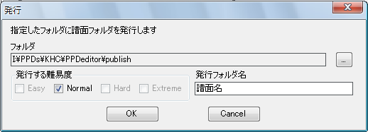

ここまでで完成したとします。配布するデータを作成します。
ファイル→発行を選択します。

以下のダイアログが表示されます。配布したい難易度にチェックを入れます。
発行先のフォルダはデフォルトでいいでしょう。
発行フォルダ名には譜面名（プロジェクト名がデフォルトで入るのでそのままでいいはずです）を入力します。

OKを押すと発行が完了し、発行先フォルダが表示されますので、そのフォルダをzipファイルに圧縮してアップローダーにアップロードしてください。
また、アップローダーにあげる前には、手元のPPDのsongsフォルダに入れてサムネイルや情報などの表示を確認しておきましょう。